Евразия
Янцзы
С китайского языка Янцзы переводится как «длинная река». В Евразии она действительно считается самой длинной и полноводной. По протяженности на карте это четвертый мировой водоем. Еще один рекордный факт – это то, что у него самое длинное русло, находящееся на территории одной страны. Объем бассейна превышает 1.8 млн. км².
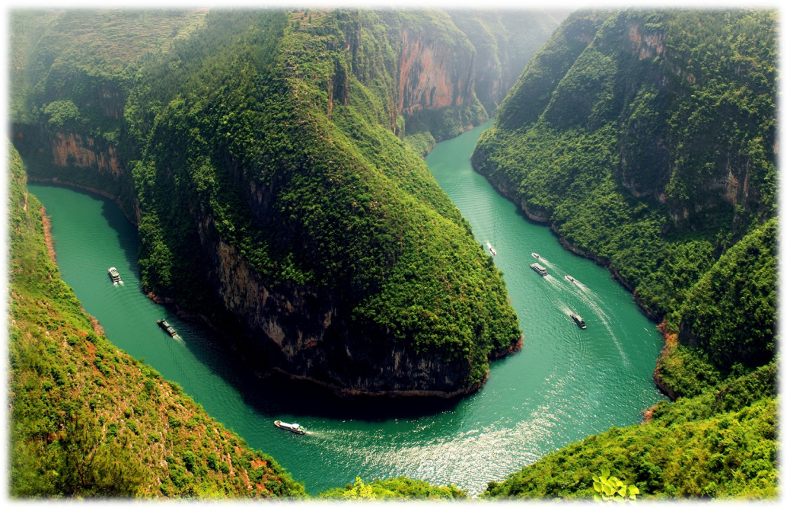Это не просто крупнейшая из китайских рек. Янцзы проходит через 1/5 часть Китая и обеспечивает водой почти треть населения государства. В дельте находятся производства, составляющие 20% ВВП страны.
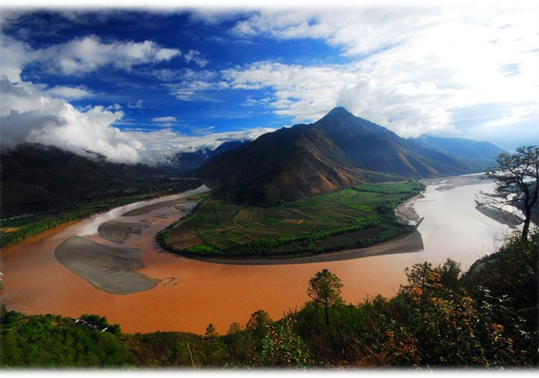Общая протяженность Янцзы составляет 6300 метров. Река несет свои воды по нескольким равнинам. В пределах провинций Хунань и Хубэй река набирает силу.
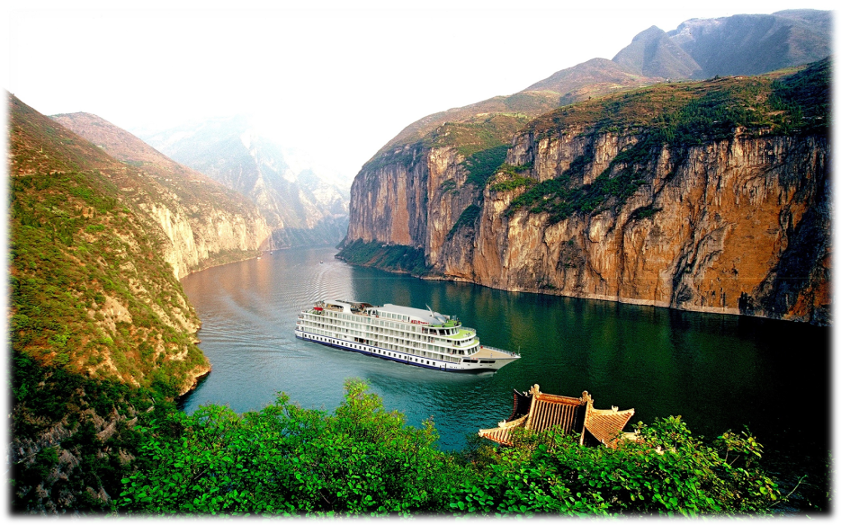Её ширина доходит до 1,6 км. В провинции Сычуань, неподалеку от Чунцина, ширина минимальна, всего 275 м. Средняя глубина реки составляет 116 м, в некоторых точках доходит до 200 м.
<Нажми меня, чтобы узнать больше>Хуанхэ
«Желтая река», по-китайски — Хуанхэ, одна из двух великих рек, между которым возникла первая цивилизация на Востоке.
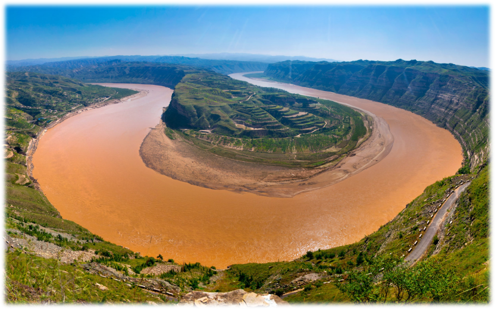Сегодня эта река обеспечивает логистику, выработку электроэнергии, треть работы промышленных предприятий и сельского хозяйства на территории почти половины Китая.
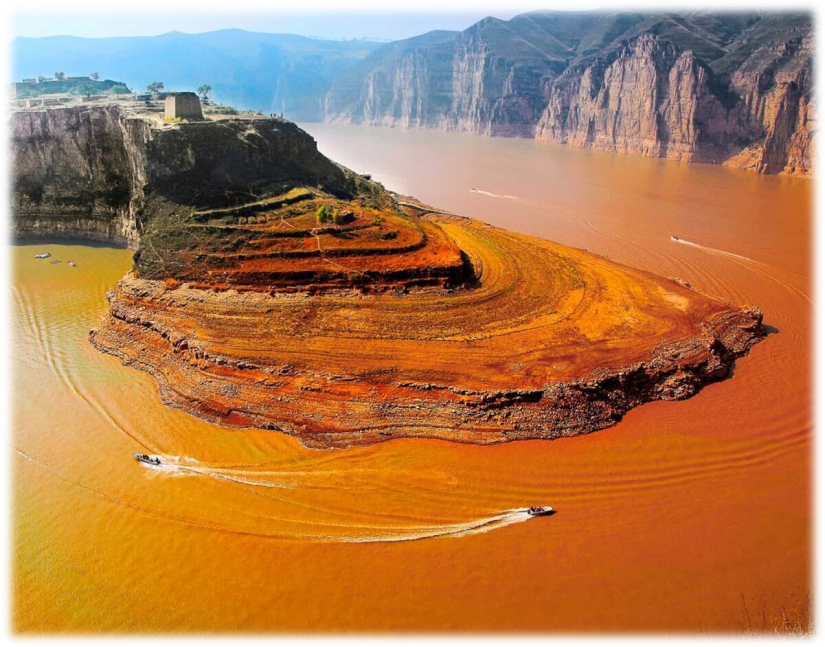История реки тесно связана с историей китайской цивилизации, ее взлетами и падениями. Исследователи подсчитали, что с момента ведения летописей по сегодняшний день, то есть примерно с 2540 года до н.э., Хуанхэ разливалась 1593 раза и 26 раз она меняла свое русло, причем перенос иногда составлял около 800 км.
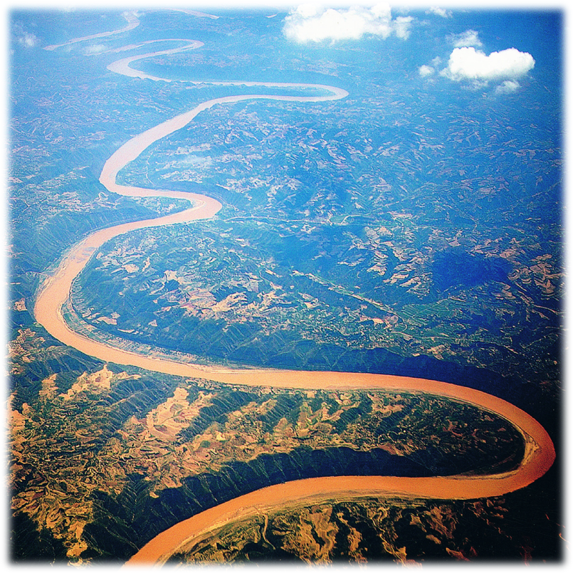Истоки Хуанхэ находятся на востоке Тибетского нагорья. Протяженность самой реки — 5500 км, а речной бассейн составляет более 750 000 кв км. Река течет с запада на восток, но на своем пути делает немало поворотов и изгибов, порой буквально на 180 градусов. Артерия образовывает одноименную речную систему и впадает в Тихий океан.
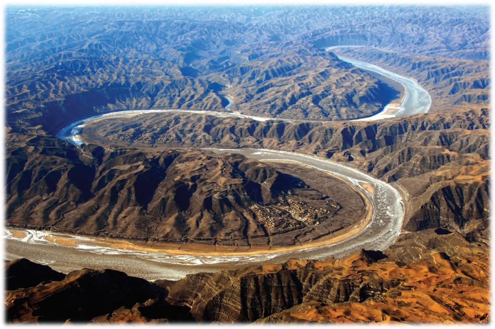Её ширина доходит до 1,6 км. В провинции Сычуань, неподалеку от Чунцина, ширина минимальна, всего 275 м. Средняя глубина реки составляет 116 м, в некоторых точках доходит до 200 м.
<Нажми меня, чтобы узнать больше>Лена
Река Лена – одна из основных достопримечательностей Сибири. Она является природным наследием и гордостью российского народа. Ее уникальность в том, что она единственная полностью течет через земли многолетней мерзлоты. Ее масштабы поражают! Длина ее русла – 4 400 км. Она занимает 10 место в мире среди самых длинных рек и восьмое по полноводности. Где протекает река Лена расскажем в статье.
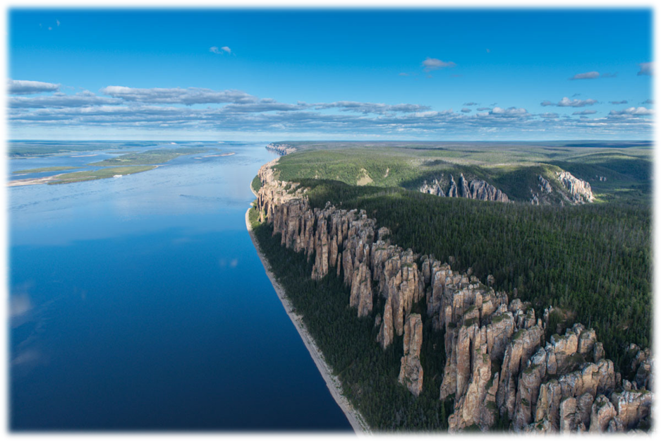Бассейн реки Лена полностью лежит на территории России. Начинается река с болотистой местности высоко в горах (около 1000 м над уровнем моря) недалеко от озера Байкал.
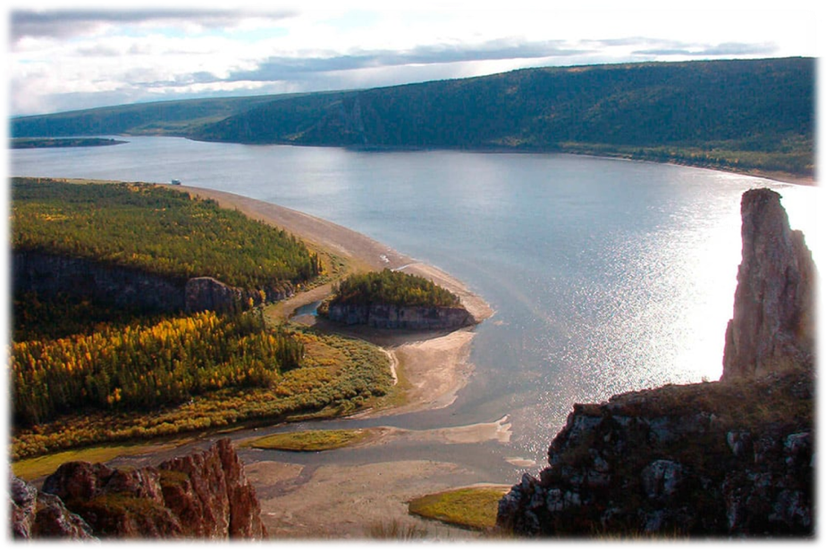Большей частью она протекает по территориям Якутии и Иркутской области, а также по местностям Хабаровского, Забайкальского и Красноярского краев. Заканчивается она, впадая в море Лаптевых, что в Северном Ледовитом Океане.
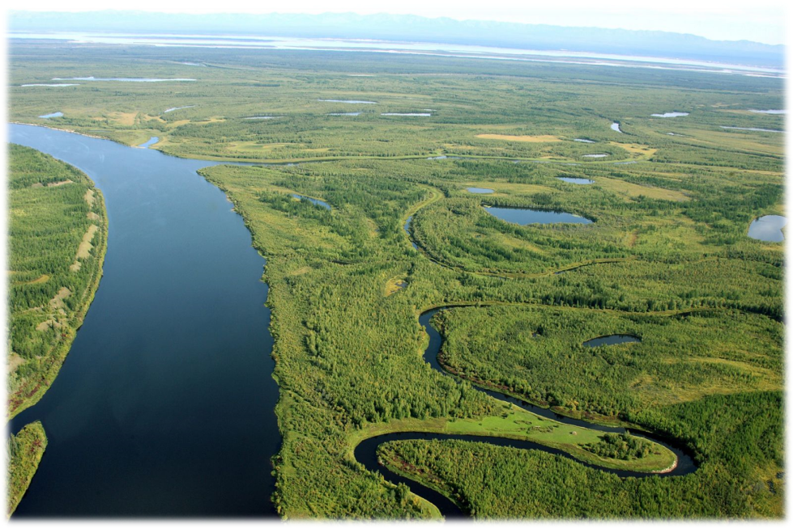Бассейн реки Лена лежит между двумя ландшафтными средами. С запада – это Среднесибирское плоскогорье, а с востока – Верхоянский, Чернский горные хребты и хребет Сунтар-Хаят.
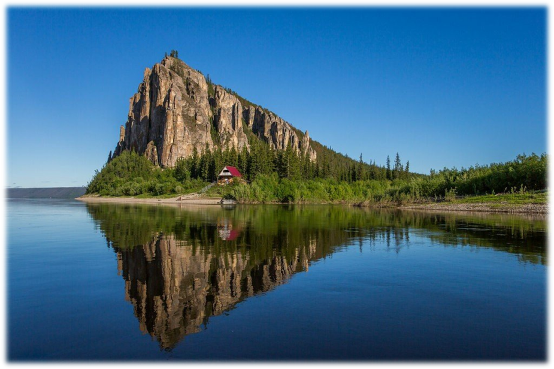Верхнее течение Лены находится на территории горной части Прибайкалья. Среднее – равнинная местность с ассиметричными берегами, вдоль которых растут леса. Нижнее течение располагается также на равнине, но дно имеет скалистый характер с островами и порогами.
<Нажми меня, чтобы узнать больше>Обь
Главной водной магистралью Сибири является река Обь. По ее берегам расположено множество крупных российских городов. Лента реки вызывает восхищение своими причудливыми узорами, любоваться которыми можно бесконечно из иллюминатора самолета.
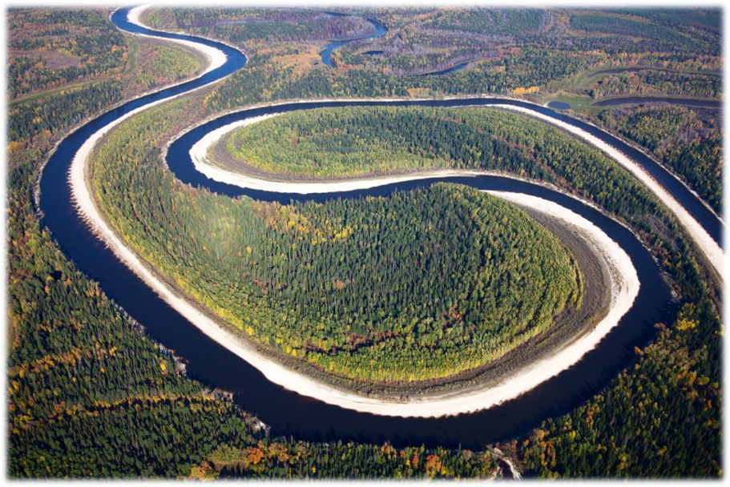Ученым понадобилось немало усилий, чтобы разгадать логику необычного направления течения загадочной реки. Народы, проживающие по берегам реки, называли ее на своих языках по-разному. Для ненцев это «мысовая река» Саля-ям, для ханты и манси «большая река» Ас.
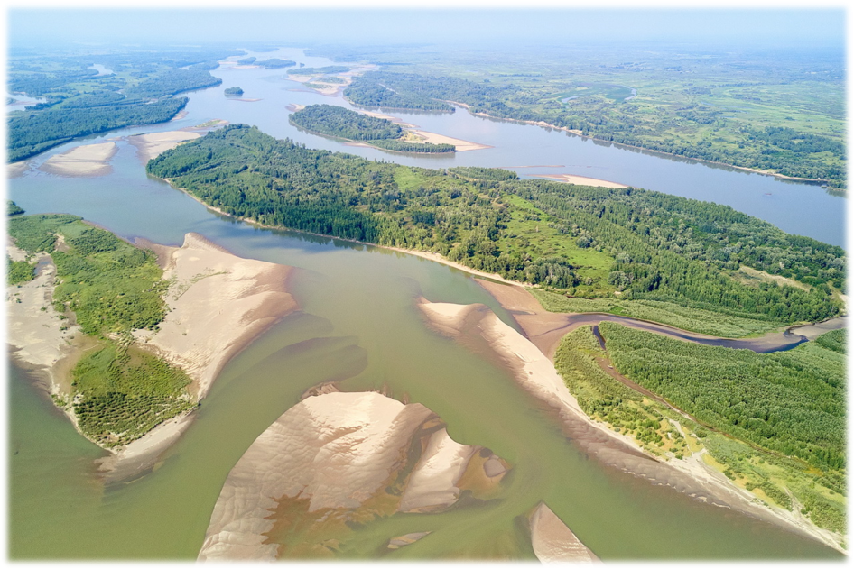Логичным является предположение о том, что слово Обь образовано от «обе». Так говорят о факте слияния Катуни и Бия, которые затем текут вместе и образуют могучую реку. У коренного народа Коми слово «обь» звучит как «снежный сугроб». Некоторые ученые связывают «обь» с иранским словом «об», что значит «вода». Народы ираноязычной группы, населяющие юг Западной Сибири в период с раннебронзового века по средневековье, могли дать реке такое имя.
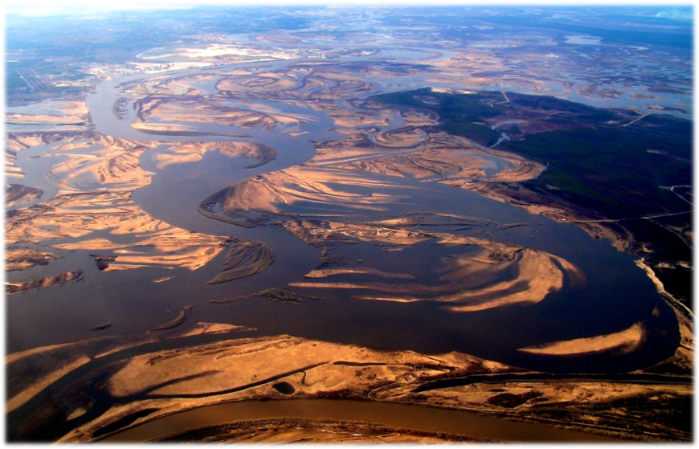Обь имеет не одно русло, а несколько, в этом ее главное отличие от других рек России. Выделяет реку и огромная площадь водосбора, равная 2930000 кв. км. Обь — бесспорный лидер среди российских рек по ширине русла. В некоторых частях ширина составляет 50 км. Еще один рекорд — самое широкое в масштабах мира устье, около 80 км.
<Нажми меня, чтобы узнать больше>Волга
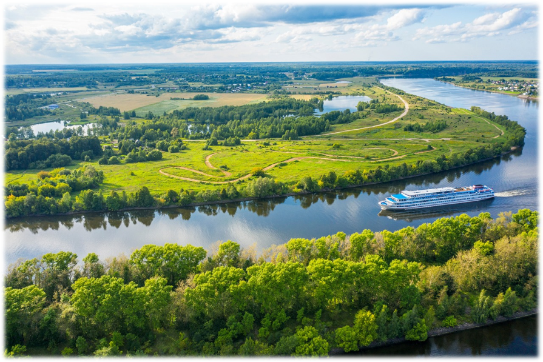Волга для России обладает такой же значимостью, как, например, Нил для Египта или Темза для Англии. Эта река не отличается максимальной протяженностью (хотя она довольно значительна и по европейским, и по мировым меркам), однако имеет свои «рекорды». Постепенно она стала для страны настоящим символом, это связано с ее историческим значением в прошлом.
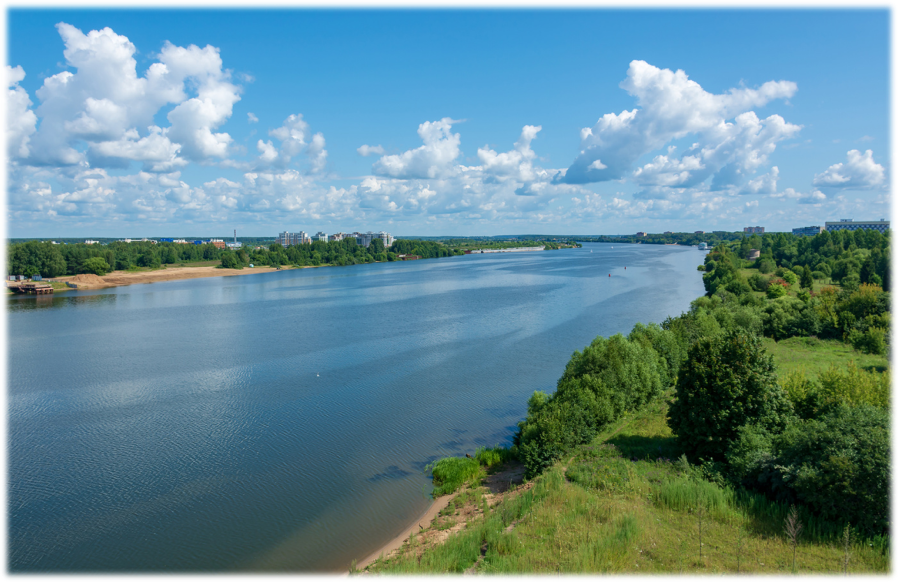Основная особенность Волги – она обладает большой протяженностью. Это обусловливает у нее наличие очень значительной по площади акватории (территории, с которой она «подпитывается»).
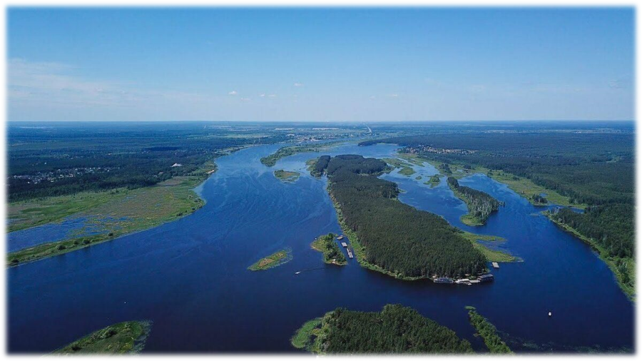Водосборный бассейн частично занимает территории 31 административного субъекта РФ. В их числе – 21 область, 8 республик, по одному краю и городу федерального значения. Также водосбор пересекает государственную границу России и Казахстана, его небольшая часть размещается на территории Атырауской области.
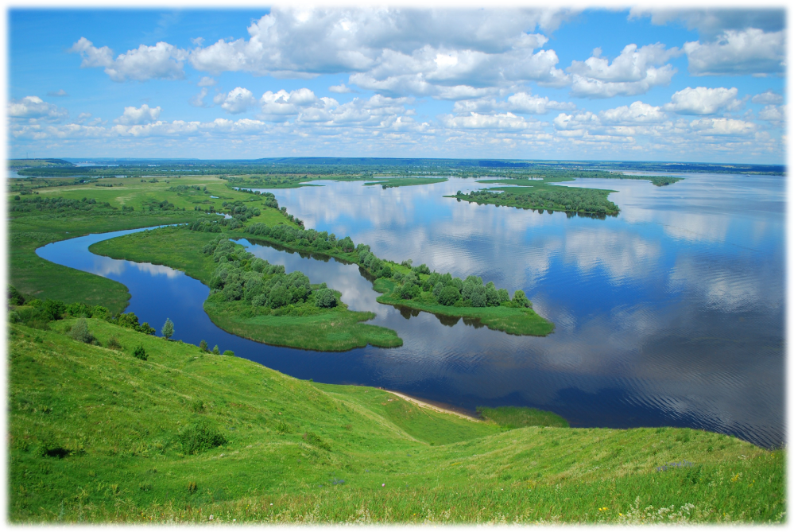Еще от других российских рек она отличается тем, что является настоящим символом страны. Это обусловлено ее историческим значением для государства: на протяжении уже примерно тысячи лет она является важной торговой магистралью, сохраняя свою значимость в этом качестве и по сей день.
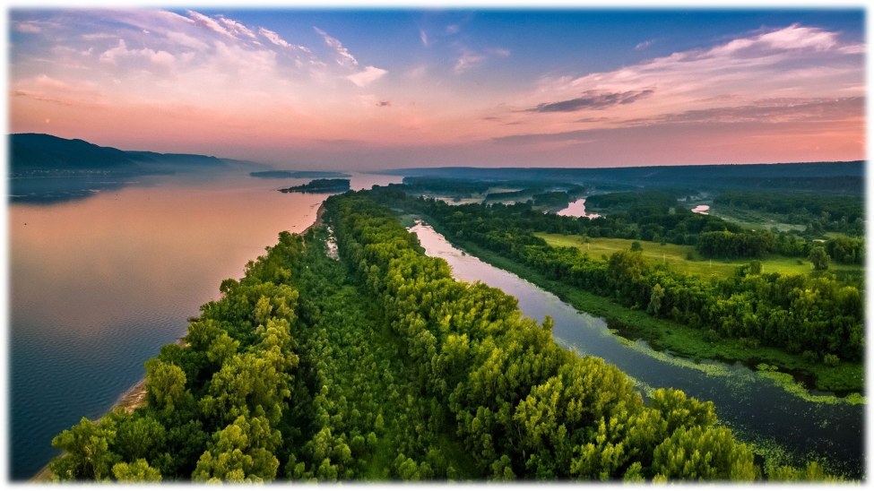Площадь водосборного бассейна водоема – 1,36 млн км². Эта цифра, в отличие от ее длины, исследователями не оспаривается. Общепринятая точка зрения – до антропогенного вмешательства и массового сооружения на Волге гидрокомплексов протяженность русла составляла 3690 км.
<Нажми меня, чтобы узнать больше>Меконг
Меконг (Мэ Нам Кхонг) – самая большая река на полуострове Индокитай. Длина русла составляет от 4500 до 4900 км. Крупные морские суда заходят в Меконг на 350 км, для мелких он судоходен на 700 км в засушливые периоды и до 1600 км в период дождей.
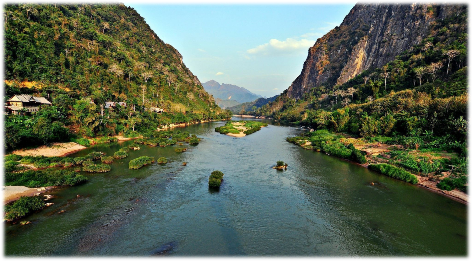Истоки Мэ Нам Кхонга находятся в Тибете, а основное русло – на территории 6 стран Азии. При впадении в Южно-китайское море оно разделяется на 2 рукава и образует большую дельту.
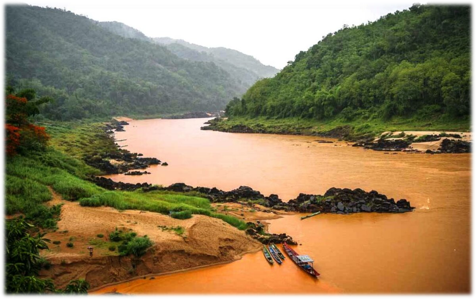Исток Мэ Нам Кхонг (Дза-Чу) расположен в Тибетском нагорье на склонах горы Тангла. В среднем течении – на территории Китая. Ниже г. Пномпень река разделяется на 2 рукава и образует обширную дельту.
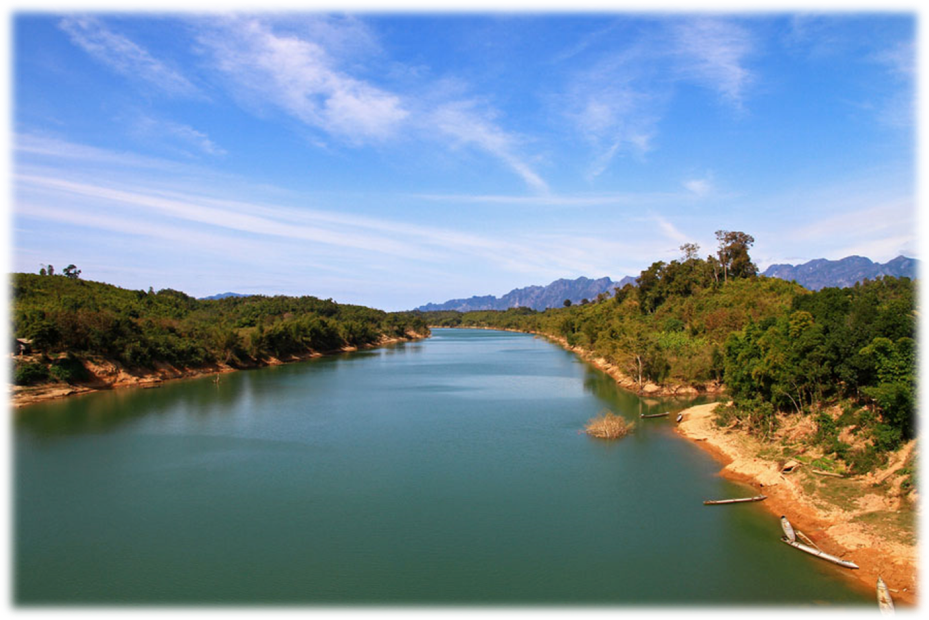Мэ Нам Кхонг протекает по территории 6 стран. Часть русла является границей между Лаосом, Таиландом и Мьянмой.
<Нажми меня, чтобы узнать больше>